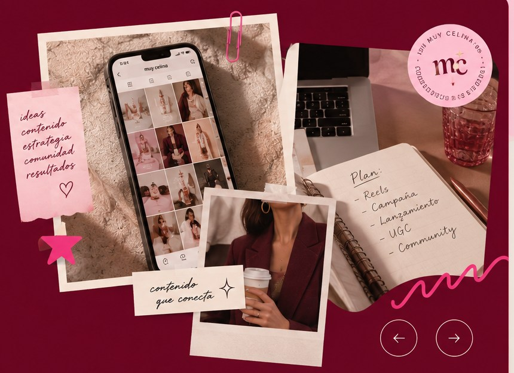

Estrategia · Contenido · Comunidad
Contenido que conecta.
Estrategia de redes sociales, creación de contenido, community management y storytelling para marcas que quieren conectar de forma auténtica y constante con su audiencia.
- Estrategia de contenidos
- Gestión de redes sociales
- Community management
- Storytelling y copywriting
- Producción de contenido (foto y video)

Ideas
Datos
Resultados ✳
Datos
Resultados ✳